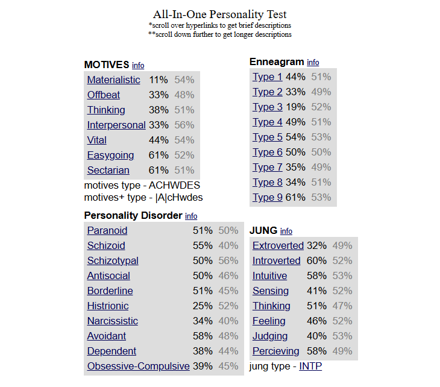

My Strongest Trait and Hero
Strongest Trait: Resilience
Resilience is my strongest trait, and it significantly influences my academic journey. In school, I often encounter setbacks, whether it's a challenging project, an unexpected exam result, or balancing multiple responsibilities. My ability to bounce back and stay focused helps me navigate these challenges effectively.
For example, during a particularly demanding semester, I faced difficulties in a science class that required a lot of critical thinking and problem-solving. Rather than becoming discouraged, I used my resilience to seek extra help, spend additional time studying, and collaborate with classmates. This determination not only improved my understanding of the subject but also taught me valuable lessons about perseverance and hard work.
My resilience extends to extracurricular activities as well. Whether participating in sports or school clubs, I always strive to learn from failures and keep pushing forward. This mindset not only enriches my educational experience but also prepares me for future challenges.
Likes:
- Anime
- Music: Steel Pan
- Reading
Dislikes:
- Cockroaches
- Noise
- Contagious Diseases
Hero: Sarah Misir
My hero is Sarah Misir, a talented race car driver who inspires me with her incredible skill and determination in a predominantly male-dominated sport. Her journey to success is a testament to hard work, passion, and breaking barriers.
"The only limits are the ones you set for yourself."
I chose Sarah Misir as my hero because she embodies resilience and fearlessness. Despite the challenges she faces as a woman in motorsports, she continues to pursue her dreams with unwavering dedication. Her achievements on the racetrack motivate me to challenge stereotypes and strive for excellence in everything I do.
Sarah's story inspires me not only in my academic pursuits but also in my personal goals. She demonstrates that with hard work and determination, it’s possible to overcome obstacles and achieve greatness. Her example encourages me to push beyond my limits and to pursue my passions, whether in sports, academics, or other areas of life.
Read and learn more about Sarah Misir
herePersonality Test
I do not think the personality test hold any validity, especially after my personal take on it. It gave me a low rate on thinking, personally I enjoy adept converations about all states of matter and as well a reading about them. The simplicity of the questions don't seem as if they are able to gauge how abstrat a person's personaliy is.